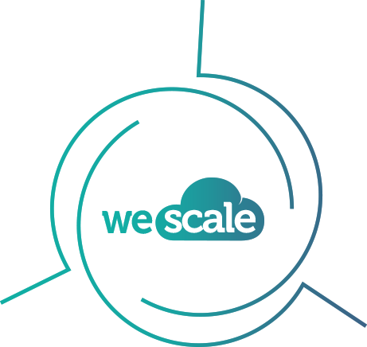

Les 3 étapes du service Wescale
01_Identifier
Nous proposons l’étude du SI de l'entreprise, pour définir les meilleurs axes d'améliorations.
02_Réaliser
Nos consultants prennent part à la mise en place des services Cloud préconisés quelle que soit la plate-forme de Cloud choisie.
03_Migrer
Nous accompagnons nos clients afin d’opérer les changements techniques et humains induits par les nouveaux services mis en place.
Nos profils
Cloud Designer

Consultant ayant une appétence pour l’analyse des besoins business et des enjeux stratégiques, de solides bases techniques Cloud pour être à même de proposer des processus et des architectures réalistes bâties pour tenir et durer.
Cloud Builder

Consultant connaissant les briques utiles au fonctionnement d'un SI ou d'une usine logicielle, aimant les approches orientées services et bilingues DevOps. Il construit la solution Cloud avec la mise en place de l’architecture cible et instruit la migration.
Cloud Runner

Consultant pro du système, de l'automatisation, du monitoring et du réseau ayant le goût des prods bien huilées et sécurisées, aimant les architectures qui en imposent.
Il opère et fait évoluer la solution Cloud mise en place.
Ils nous font confiance
Nous accompagnons les projets de nombreux clients grands comptes institutionnels, industriels ou du monde bancaire.